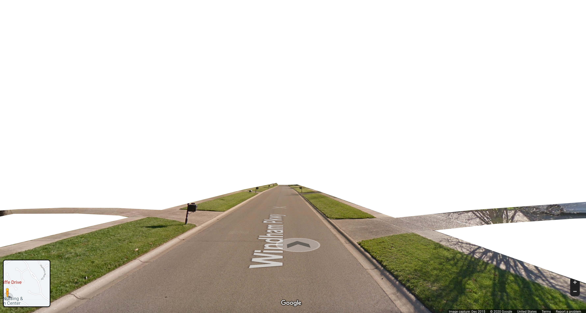
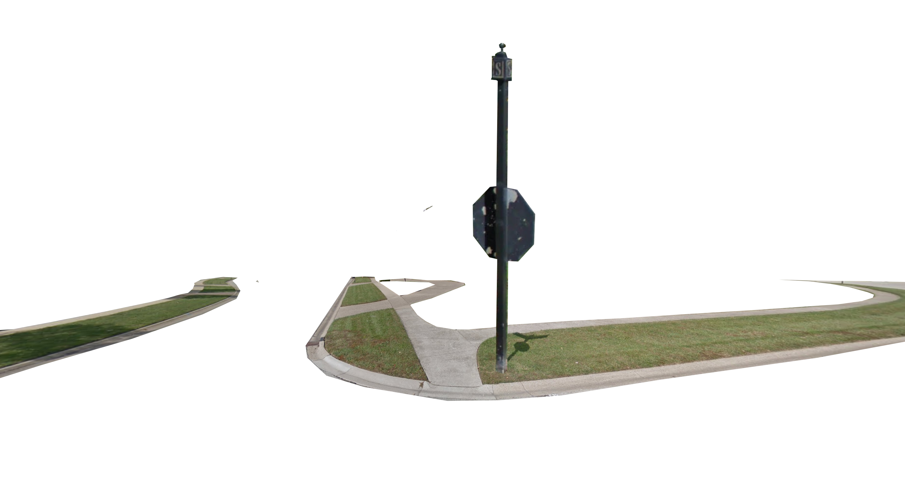
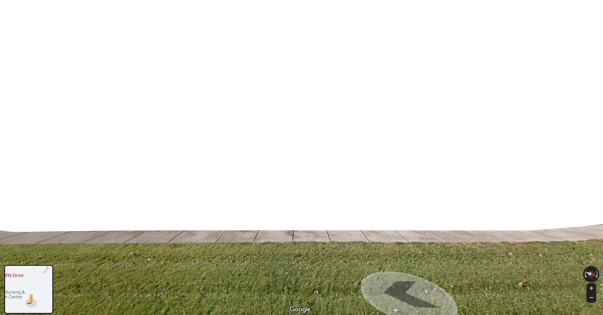
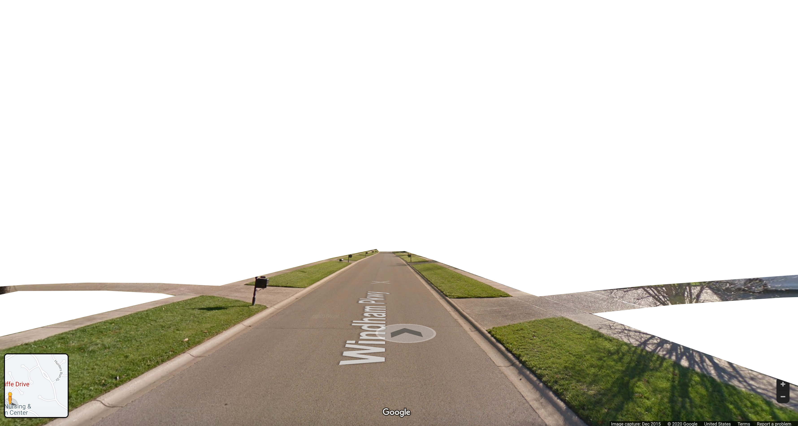
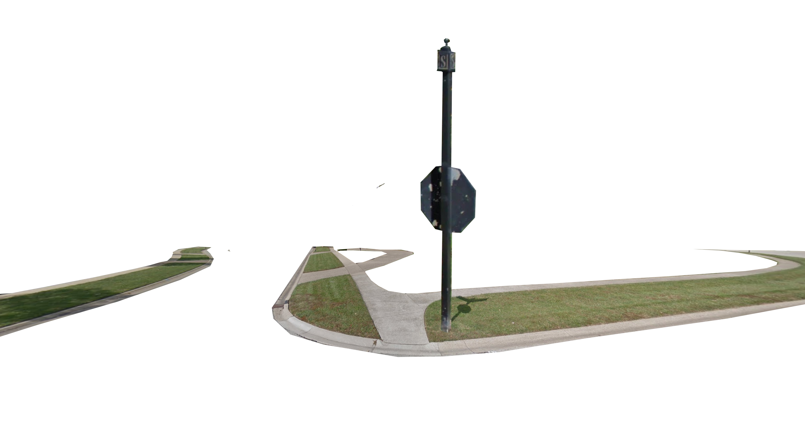
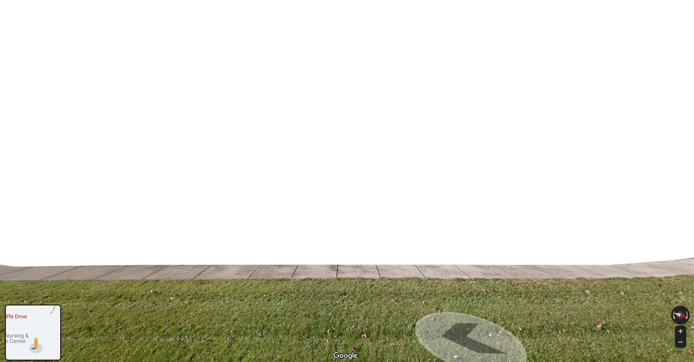
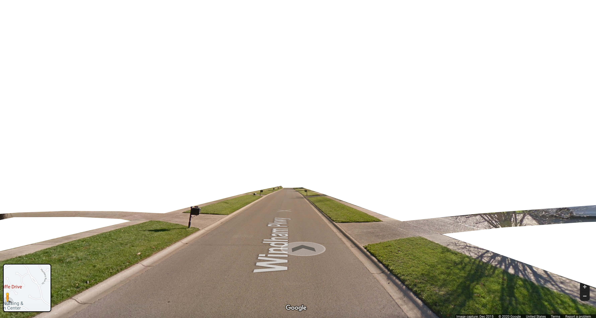
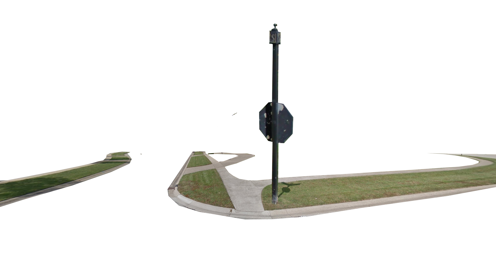
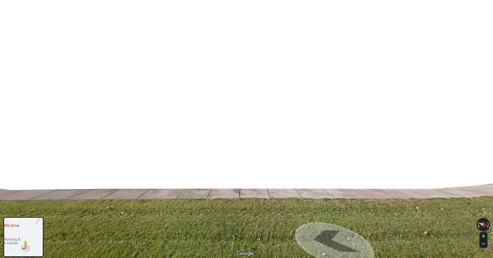

Wireframes early draft


 






SiteMap
Abstract
Suburbika is a digital exploration of the aesthetics of suburban settler colonialism. The project takes inspiration from the interactivity of google street view -- users navigate through the suburbika landscape and interact with visual elements to see the space anew. The project juxtaposes urgent realities of police brutality and the erasure of native histories against quaint and perky imagery of private property.
Project Description
Suburbika is a poetic case study of the aesthetics of settler colonialism in the Louisville suburb of Prospect, KY. The neighborhood’s proximity to the site of recent Black Lives Matter movements in response to the murders of Breonna Taylor and David McAtee at the hands of city and state police officers, the presence of Native American Burial Mounds on the main cul de sac, the current development projects and retaliation against affordable housing proposals, and it’s portrait in the documentary In Sickness and In Wealth, an study proving the connection between zip code, stress levels, and life expectancy, all intersect to make for a fruitful meditation on the preservation of private property above the wellness on living beings.
Johnsrude employs a colorful, cut-out technique that calls to mind architectural mock ups and draws the viewer’s attention to the design of it all. Each page focuses on a different theme -- “lawns,” “yard signs,” “utilities,” for example -- that are further complicated by juxtaposed audio that alternates between diegetic, flooding sounds of motors, spriklers, generators and interviews with activists or samples from protests that run counter to the picture-book imagery displayed on the screen.
The project also uses buttons to hyperlink to related articles, projects, and sites -- from which the user can choose to continue their investigation into the “real.” Some opportunities for integration include links to gofundme’s for Louisville Bail Fund, or a sign cataloguing project by The People of Hunting Ground.
At the conclusion of the virtual tour, viewers should feel uneasy about their relationship to the spaces they move through. They should question the history of the space they live, work, eat, and reconsider the aesthetic choices they make. Perhaps, they will even consider themselves to be settlers and wish to further educate themselves on their relationship to systemic, and interpersonal, white supremacy.
Wireframes early draft



SiteMap